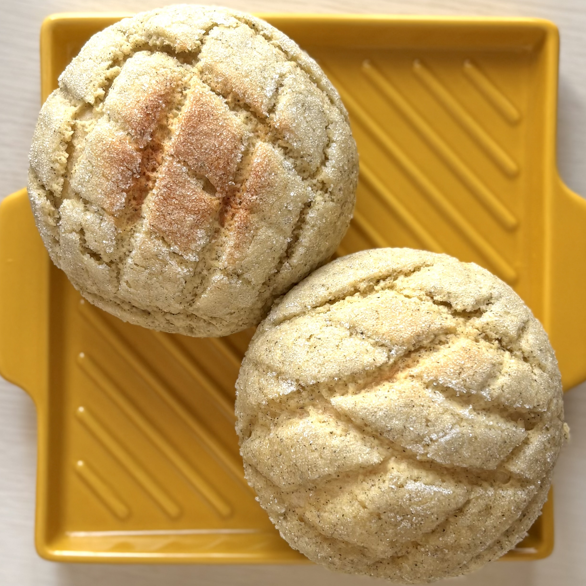
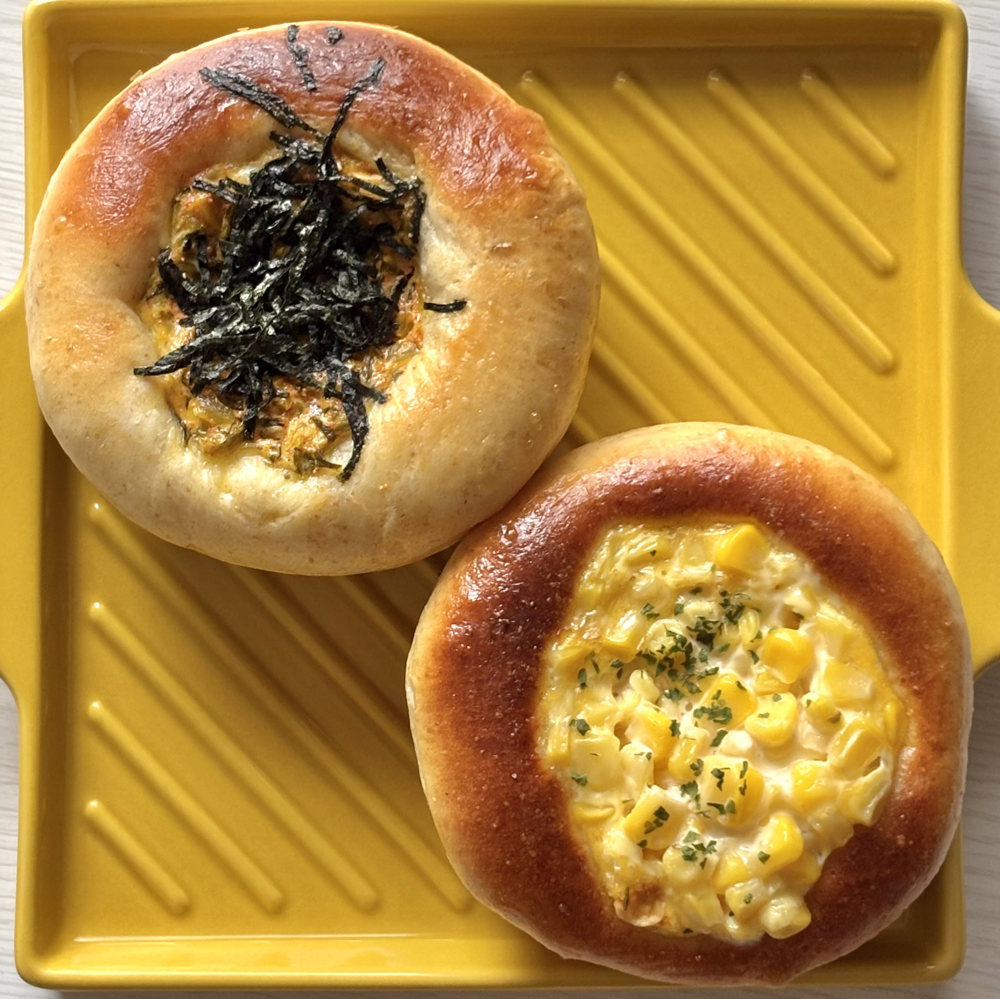
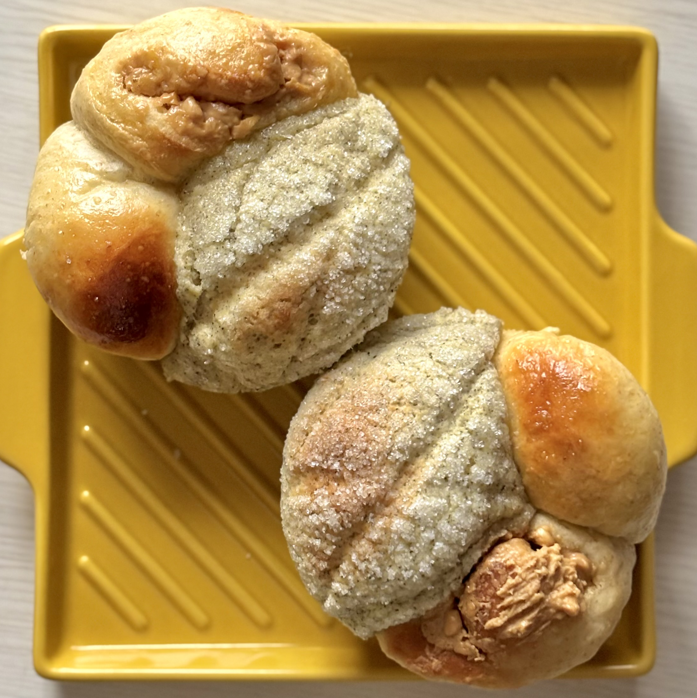
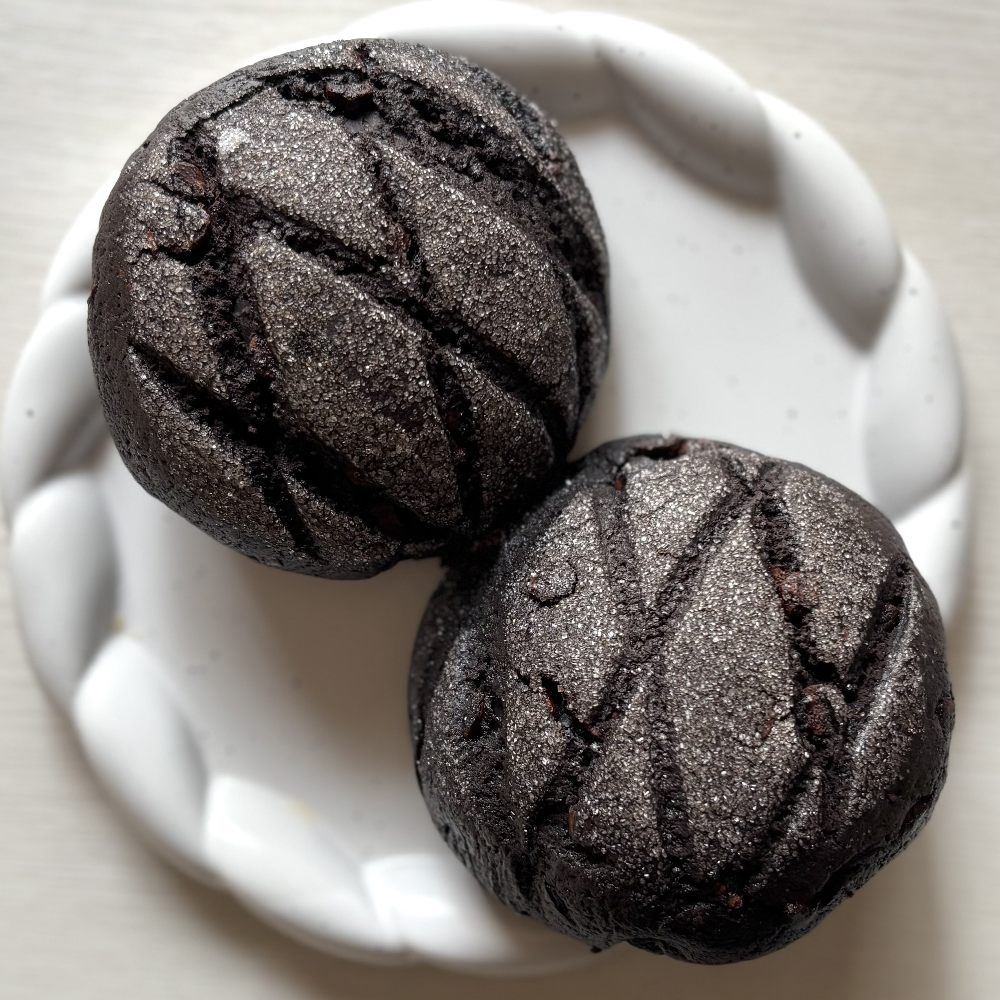
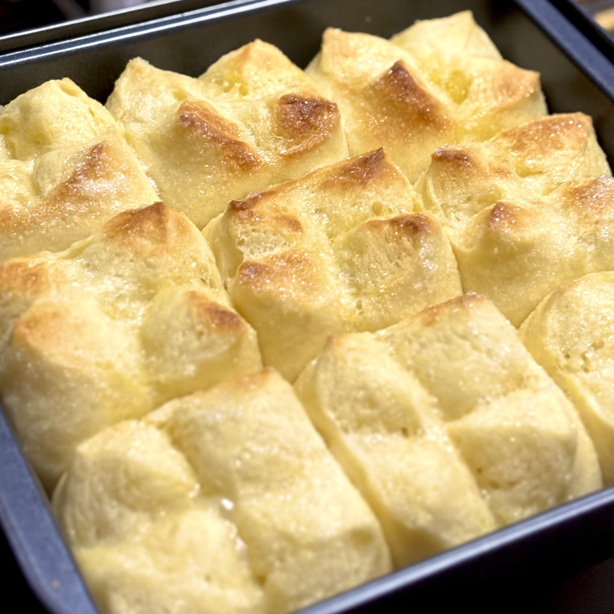
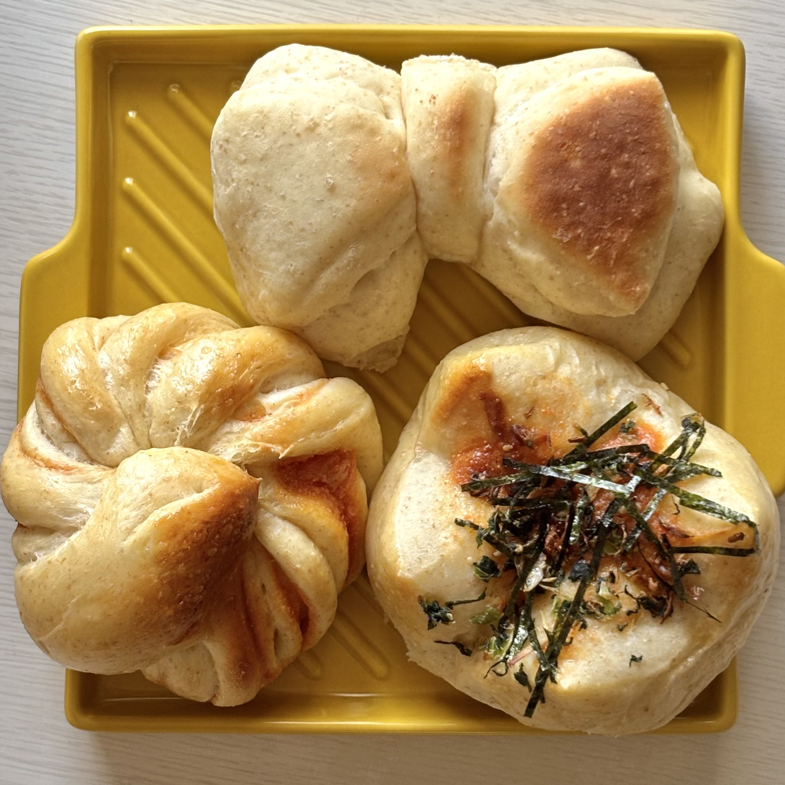

さとうパン店
BREAD

アールグレイメロンパン
通常のクッキー生地にアールグレイ茶葉を混ぜ込んだもの。ベースのパン生地には全粒粉使用でくどくない味わいに。

明太マヨパン＆コーンマヨパン
全粒粉入りのパン生地で惣菜パン2種。コーンマヨパンは、コンビニでよく見かける甘めのパンをイメージして砂糖多めに。

よくばりちぎりパン
バンズ型に入れて3種のパンをぎゅうぎゅうに入れて焼いたちぎりパン。アールグレイメロンパン＆ピーナッツロール＆あんぱん。

チョコまみれメロンパン
自分用のバレンタインデーとして作成。クッキー生地とパン生地両方にたっぷりブラックココアをも混ぜ、チョコチップも使用。

マーガリンシュガーパン
ケーキ用の角形に入れて焼いたちぎりパン。十字の切れ目を入れたのち、マーガリンと砂糖を乗せて焼成。

ねじり明太＆リボンパン＆高菜明太
全粒粉入りのパン生地で、3パターンの成型。リボン型と、切れ目を入れてねじるもの、中央に十字の切れ込みを入れるものの3種。
PROFILE
サトウ／Sato
福島県出身。デザイナー、イラストレーター、エディター。 専門学校で出版系のデザインを学んだのち、新卒で編集プロダクションに入社。編集者として従事しながらイラストやデザインも手掛ける。現在はWeb業界を目指しHTML・CSSを勉強中。パンとアイドルが好き。